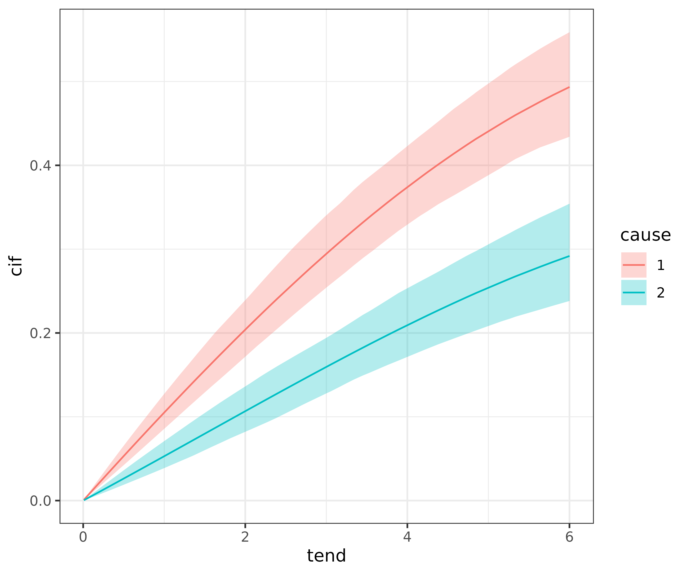
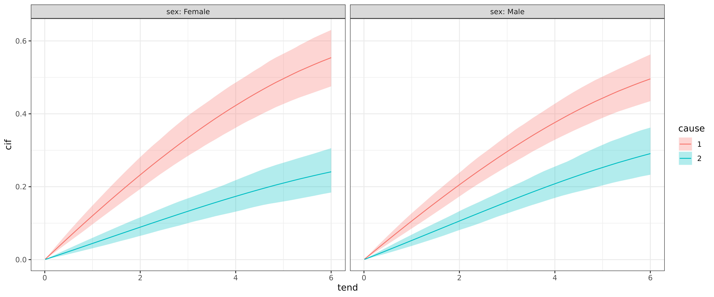
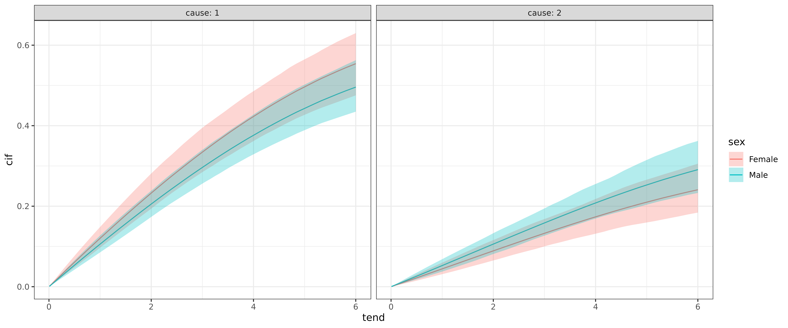

In this article we illustrate how to fit cause specific hazards models to competing risks data. The standard way to estimate cause specific hazards is to create one data set for each event type and fit a separate model. However, it is also possible to create one combined data set and enter the event type as a covariate (with interactions), such that it is possible to estimate shared effects (i.e., effects that contribute equally to the hazard of multiple event types).
fourD Data
For illustration we use the fourD data set from the
etm package. The data set contains
time-constant covariates like age and sex as
well as time-to-event (time) and event type indicator
status (0 = censored, 1 = death from cardiovascular events,
2 = death from other causes).
## id sex age medication status time treated
## 1 5002 Male 60 Placebo 0 5.8480493 0
## 4 5006 Female 68 Placebo 0 5.2539357 0
## 7 5011 Female 70 Placebo 1 2.9541410 0
## 9 5014 Male 69 Placebo 1 0.9856263 0
## 10 5017 Female 58 Placebo 1 0.2902122 0
## 11 5018 Male 63 Placebo 1 3.9452430 0Data transformation
The data transformation required to fit PAMMs to competing risks data
is similar to the transformation in the single event case (see the data
transformation vignette for details). In fact, internally the
standard transformation is applied to each event type using
as_ped, however, some choices have to be made
- use the same or different interval split points for the different event types?
- return the data as a list (one element for each event type) or a stacked data set (with an additional column (covariate), indicating the event type)
For cause specific hazards without shared effects the combination of cause specific interval split points and list output is usually sufficient. For models with shared effects we need to stack the individual data sets and use split points common for all event types.
Cause specific hazards model without shared effects
Below we transform the data set for the case without shared effects.
By specifying cobmine = FALSE, the individual data sets are
not stacked but rather returned in a list.
cut <- sample(fourD$time, 100)
ped <- fourD %>%
select(-medication, - treated) %>%
as_ped(Surv(time, status)~., id = "id", cut = cut, combine = FALSE)
str(ped, 1)## List of 2
## $ cause = 1:Classes 'ped' and 'data.frame': 35802 obs. of 9 variables:
## ..- attr(*, "breaks")= num [1:97] 0.00821 0.03012 0.06023 0.06845 0.19165 ...
## ..- attr(*, "id_var")= chr "id"
## ..- attr(*, "intvars")= chr [1:6] "id" "tstart" "tend" "interval" ...
## ..- attr(*, "trafo_args")=List of 3
## ..- attr(*, "time_var")= chr "time"
## ..- attr(*, "status_var")= chr "status"
## $ cause = 2:Classes 'ped' and 'data.frame': 35802 obs. of 9 variables:
## ..- attr(*, "breaks")= num [1:97] 0.00821 0.03012 0.06023 0.06845 0.19165 ...
## ..- attr(*, "id_var")= chr "id"
## ..- attr(*, "intvars")= chr [1:6] "id" "tstart" "tend" "interval" ...
## ..- attr(*, "trafo_args")=List of 3
## ..- attr(*, "time_var")= chr "time"
## ..- attr(*, "status_var")= chr "status"
## - attr(*, "class")= chr [1:4] "ped_cr_list" "ped_cr" "ped" "list"
## - attr(*, "trafo_args")=List of 5
## - attr(*, "risks")= int [1:2] 1 2
# data set for event type 1 (death from cardiovascular events)
head(ped[[1]])## id tstart tend interval offset ped_status
## 1 5002 0.000000000 0.008213552 (0,0.0082135524] -4.801970 0
## 2 5002 0.008213552 0.030116359 (0.0082135524,0.0301163587] -3.821141 0
## 3 5002 0.030116359 0.060232717 (0.0301163587,0.0602327173] -3.502687 0
## 4 5002 0.060232717 0.068446270 (0.0602327173,0.0684462697] -4.801970 0
## 5 5002 0.068446270 0.191649555 (0.0684462697,0.1916495551] -2.093920 0
## 6 5002 0.191649555 0.221765914 (0.1916495551,0.2217659138] -3.502687 0
## sex age cause
## 1 Male 60 1
## 2 Male 60 1
## 3 Male 60 1
## 4 Male 60 1
## 5 Male 60 1
## 6 Male 60 1
# data set for event type 2 (death from other causes)
head(ped[[2]])## id tstart tend interval offset ped_status
## 1 5002 0.000000000 0.008213552 (0,0.0082135524] -4.801970 0
## 2 5002 0.008213552 0.030116359 (0.0082135524,0.0301163587] -3.821141 0
## 3 5002 0.030116359 0.060232717 (0.0301163587,0.0602327173] -3.502687 0
## 4 5002 0.060232717 0.068446270 (0.0602327173,0.0684462697] -4.801970 0
## 5 5002 0.068446270 0.191649555 (0.0684462697,0.1916495551] -2.093920 0
## 6 5002 0.191649555 0.221765914 (0.1916495551,0.2217659138] -3.502687 0
## sex age cause
## 1 Male 60 2
## 2 Male 60 2
## 3 Male 60 2
## 4 Male 60 2
## 5 Male 60 2
## 6 Male 60 2To fit the model, we could loop through the list entries and fit the model of interest, however, there is also a convenience function, that recognizes the data type and fits the models accordingly:
library(mgcv)
pam_csh <- map(ped, ~ pamm(ped_status ~ s(tend) + sex + age, data = .x))
map(pam_csh, summary)## $`cause = 1`
##
## Family: poisson
## Link function: log
##
## Formula:
## ped_status ~ s(tend) + sex + age
##
## Parametric coefficients:
## Estimate Std. Error z value Pr(>|z|)
## (Intercept) -3.209328 0.585779 -5.479 4.28e-08 ***
## sexMale -0.131195 0.132001 -0.994 0.3203
## age 0.019798 0.008446 2.344 0.0191 *
## ---
## Signif. codes: 0 '***' 0.001 '**' 0.01 '*' 0.05 '.' 0.1 ' ' 1
##
## Approximate significance of smooth terms:
## edf Ref.df Chi.sq p-value
## s(tend) 1.005 1.01 8.173 0.00435 **
## ---
## Signif. codes: 0 '***' 0.001 '**' 0.01 '*' 0.05 '.' 0.1 ' ' 1
##
## R-sq.(adj) = -0.00762 Deviance explained = 0.553%
## UBRE = -0.92528 Scale est. = 1 n = 35802
##
## $`cause = 2`
##
## Family: poisson
## Link function: log
##
## Formula:
## ped_status ~ s(tend) + sex + age
##
## Parametric coefficients:
## Estimate Std. Error z value Pr(>|z|)
## (Intercept) -7.03001 0.88594 -7.935 2.10e-15 ***
## sexMale 0.16772 0.18028 0.930 0.352
## age 0.06411 0.01244 5.156 2.52e-07 ***
## ---
## Signif. codes: 0 '***' 0.001 '**' 0.01 '*' 0.05 '.' 0.1 ' ' 1
##
## Approximate significance of smooth terms:
## edf Ref.df Chi.sq p-value
## s(tend) 1.023 1.045 9.837 0.00185 **
## ---
## Signif. codes: 0 '***' 0.001 '**' 0.01 '*' 0.05 '.' 0.1 ' ' 1
##
## R-sq.(adj) = -0.00276 Deviance explained = 2.3%
## UBRE = -0.95786 Scale est. = 1 n = 35802Cause specific hazards with shared effects
The data transformation is performed as before, but setting
combine=TRUE (the default), the interval cut points are
created based on all event times (event times of all event types, here)
and stacked:
ped_stacked <- fourD %>%
select(-medication, - treated) %>%
as_ped(Surv(time, status)~., id = "id", cut = cut) %>%
mutate(cause = as.factor(cause))
head(ped_stacked)## id tstart tend interval offset ped_status
## 1 5002 0.000000000 0.008213552 (0,0.0082135524] -4.801970 0
## 2 5002 0.008213552 0.030116359 (0.0082135524,0.0301163587] -3.821141 0
## 3 5002 0.030116359 0.060232717 (0.0301163587,0.0602327173] -3.502687 0
## 4 5002 0.060232717 0.068446270 (0.0602327173,0.0684462697] -4.801970 0
## 5 5002 0.068446270 0.191649555 (0.0684462697,0.1916495551] -2.093920 0
## 6 5002 0.191649555 0.221765914 (0.1916495551,0.2217659138] -3.502687 0
## sex age cause
## 1 Male 60 1
## 2 Male 60 1
## 3 Male 60 1
## 4 Male 60 1
## 5 Male 60 1
## 6 Male 60 1Model for cause specific hazards with shared effects is performed by inclusion of interaction effects:
pam_csh_shared <- pamm(
formula = ped_status ~ s(tend, by = cause) + sex + sex:cause + age + age:cause,
data = ped_stacked)
summary(pam_csh_shared)##
## Family: poisson
## Link function: log
##
## Formula:
## ped_status ~ s(tend, by = cause) + sex + sex:cause + age + age:cause
##
## Parametric coefficients:
## Estimate Std. Error z value Pr(>|z|)
## (Intercept) -3.209325 0.585780 -5.479 4.28e-08 ***
## sexMale -0.131195 0.132001 -0.994 0.320276
## age 0.019798 0.008446 2.344 0.019079 *
## sexFemale:cause2 -3.820513 1.062055 -3.597 0.000322 ***
## sexMale:cause2 -3.521649 1.015875 -3.467 0.000527 ***
## age:cause2 0.044311 0.015032 2.948 0.003200 **
## ---
## Signif. codes: 0 '***' 0.001 '**' 0.01 '*' 0.05 '.' 0.1 ' ' 1
##
## Approximate significance of smooth terms:
## edf Ref.df Chi.sq p-value
## s(tend):cause1 1.002 1.004 8.176 0.00428 **
## s(tend):cause2 1.048 1.095 9.732 0.00213 **
## ---
## Signif. codes: 0 '***' 0.001 '**' 0.01 '*' 0.05 '.' 0.1 ' ' 1
##
## R-sq.(adj) = -0.00545 Deviance explained = 2.02%
## UBRE = -0.94157 Scale est. = 1 n = 71604The results indicate that cause specific terms (interactions) are necessary in this case and the two models largely agree. For example, the age effect for the two causes are very similar for both models:
- cause1: 0.02 (
pamm_csh1) vs. 0.02 (pamm_csh_shared) - cause2: 0.064 (
pamm_csh2) vs. 0.02 + 0.044= 0.064 (pamm_csh_shared)
Cumulative Incidence Function (CIF)
Finally, in many cases we will want to calculate and visualize the
cumulative incidence functions for different covariate combinations. In
pammtools this can be again achieved using
make_newdata and using the appropriate add_*
function, here add_cif:
ndf <- ped_stacked %>%
make_newdata(tend = unique(tend), cause = unique(cause)) %>%
group_by(cause) %>%
add_cif(pam_csh_shared)
ndf %>%
select(tend, cause, cif, cif_lower, cif_upper) %>%
group_by(cause) %>%
slice(1:3)## # A tibble: 6 × 5
## # Groups: cause [2]
## tend cause cif cif_lower cif_upper
## <dbl> <fct> <dbl> <dbl> <dbl>
## 1 0.00821 1 0.000882 0.000688 0.00111
## 2 0.0301 1 0.00323 0.00252 0.00407
## 3 0.0602 1 0.00646 0.00505 0.00811
## 4 0.00821 2 0.000428 0.000294 0.000601
## 5 0.0301 2 0.00157 0.00108 0.00220
## 6 0.0602 2 0.00314 0.00217 0.00441
ggplot(ndf, aes(x = tend, y = cif)) +
geom_line(aes(col = cause)) +
geom_ribbon(
aes(ymin = cif_lower, ymax = cif_upper, fill = cause),
alpha = .3)
Similar to other applications of add_* functions, we can
additionally group by other covariate values:
ndf <- ped_stacked %>%
make_newdata(tend = unique(tend), cause = unique(cause), sex = unique(sex))
ndf <- ndf %>%
group_by(cause, sex) %>%
add_cif(pam_csh_shared)The estimated CIFs can then be compared w.r.t. to cause
for each category of sex:
ggplot(ndf, aes(x = tend, y = cif)) +
geom_line(aes(col = cause)) +
geom_ribbon(
aes(ymin = cif_lower, ymax = cif_upper, fill = cause),
alpha = .3) +
facet_wrap(~sex, labeller = label_both)
or w.r.t. to sex for each cause:
ggplot(ndf, aes(x = tend, y = cif)) +
geom_line(aes(col = sex)) +
geom_ribbon(
aes(ymin = cif_lower, ymax = cif_upper, fill = sex),
alpha = .3) +
facet_wrap(~cause, labeller = label_both)